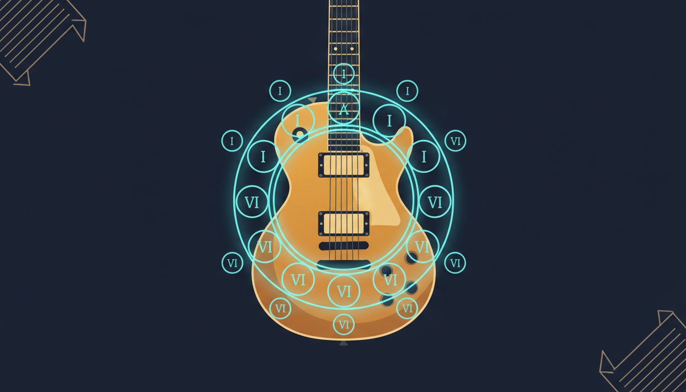
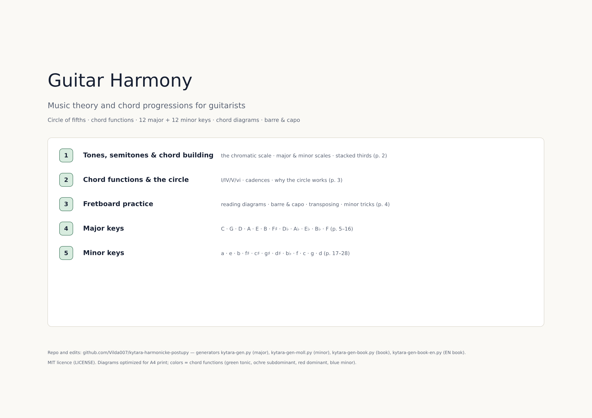
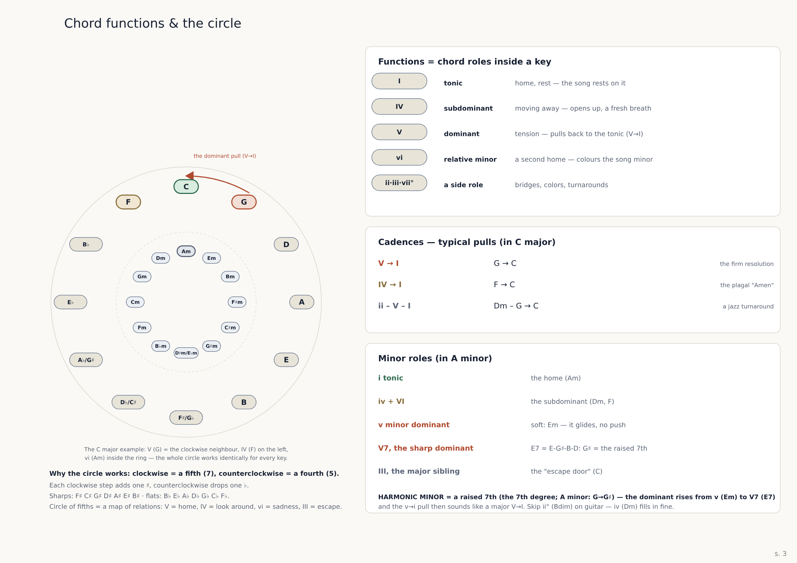
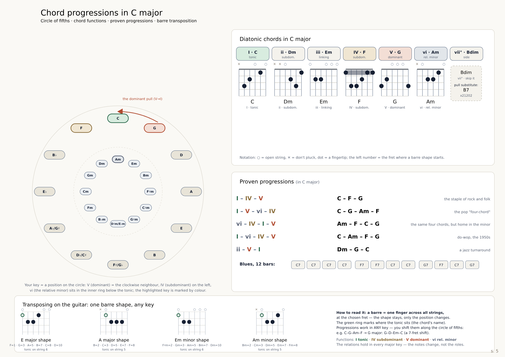

Circle of fifths, real guitar fingering and the classic progressions — including a 12-bar blues — for all 12 major and 12 minor keys. Free PDFs, fully generated.
The key is highlighted on the circle: I green, V red, IV orange, vi blue; arrow shows the V→I dominant move.
Diatonic chords with fretboard shapes — barre start-fret marked, vii° with a practical V7 substitute.
I–IV–V, pop four-chord, doo-wop, ii–V–I and 12-bar blues — rewritten in every key.
Python data tables → HTML → PDF. Fix a typo, rerun, re-render. Fully reproducible.



Diagramy harmonických postupů pro 12 dur i 12 molových tónin — na každé straně kruh kvint se zvýrazněnou tóninou, diatonické akordy s hmaty (barré = počáteční pražec), osvědčené postupy a blues. Kniha (28 str.) má i 3 strany teorie od nuly.